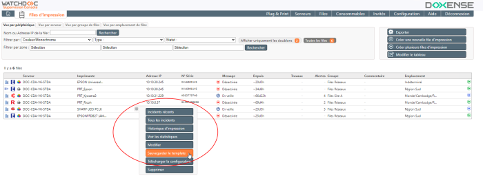
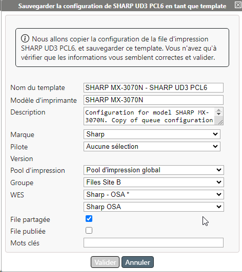

Préalable
Un "template d'imprimante" est une configuration de file d'impression que l'on souhaite utiliser comme modèle. Ce modèle peut ensuite être appliqué à plusieurs périphériques de même marque utilisant le même pilote et qui nécessitent la même configuration.
Notez qu'il faut avoir préalablement ajouté un pilote (cf. WSC - Ajouter un pilote) et avoir créé une file (cf. WSC - Créer une file d'impression) pour créer un template.
Créer un Template Modèle de périphérique d'impression (avec sa configuration) qu'il est possible de créer dans WSC afin de l'appliquer ensuite à plusieurs périphériques de même marque et utilisant la même configuration.
Bien qu'il s'agisse d'un modèle de configuration, le terme "modèle" n'a pas été retenu pour éviter la confusion avec le terme "modèle d'imprimante ou de MFP" déjà utilisé par les constructeurs. d'imprimante à partir d'une file déjà déclarée dans WSC
Modèle de périphérique d'impression (avec sa configuration) qu'il est possible de créer dans WSC afin de l'appliquer ensuite à plusieurs périphériques de même marque et utilisant la même configuration.
Bien qu'il s'agisse d'un modèle de configuration, le terme "modèle" n'a pas été retenu pour éviter la confusion avec le terme "modèle d'imprimante ou de MFP" déjà utilisé par les constructeurs. d'imprimante à partir d'une file déjà déclarée dans WSC
Accéder au gestionnaire d'impression
-
En tant qu'administrateur, accédez au serveur d'impression ;
-
lancez le gestionnaire d'impression Microsoft Windows (Print Management) ;
-
depuis le gestionnaire, ajoutez un périphérique d'impression ou sélectionnez l'un des périphériques déjà installés (la version du périphérique et non pas la version"Shadow" du périphérique) ;
-
cliquez-droit pour accéder aux propriétés du périphérique d'impression, puis aux paramètres d'impression (options, préférences, paramètres, selon les modèles) ;
-
définissez précisément tous les paramètres d'impression de ce périphérique (couleur ou noir et blanc, recto ou recto-verso, format, etc.) ;
-
appliquez puis enregistrez les propriétés du périphérique d'impression.
Accéder à l'interface de supervision
-
En tant qu'administrateur, accédez à WSC ;
-
Depuis le Menu principal de WSC, cliquez sur bouton Files d'impression ;
-
Dans la liste, repérez la file dont vous venez de définir les paramètres et cliquez sur la roue dentée permettant d'accéder au menu :
-
Dans le menu, cliquez sur Sauvegarder le template ;

-
dans l'interface Sauvegarder la configuration en tant que template, vérifiez et complétez si nécessaire les paramètres suivants :
-
Nom du template : saisissez le nom du template (affiché dans les interfaces de gestion). Nous recommandons d'utiliser le nom commercial du périphérique pour plus de facilité, mais vous êtes libres de saisir une autre valeur.
-
Modèle d'imprimante : indiquez le modèle du périphérique di'mpression (à des fins de gestion).
-
Description :complétez le nom et le modèle d'un commentaire indiquant l'utilisation qui est faite de ce périphérique.
-
Marque : dans la liste, sélectionnez la marque constructeur du périphérique d'impression.
-
Pilote : dans la liste, sélectionnez le pilote que vous souhaitez associer au périphérique d'impression. Si le pilote à associer n'apparaît pas dans la liste, procédez à l'ajout du pilote (cf. Créer un pilote dans P&P).
-
Version : la version du pilote sélectionné s'affiche automatiquement.
-
Pool d'impression : dans la liste, sélectionnez le pool
Depuis Watchdoc 5.2, le pool d'impression est un réservoir logique conçu pour lister des travaux en attente d'impression. Le Pool (pool de travauxl) sert notamment lors de la redirection de travaux d'une file d'impression à l'autre en cas de défaillance : ainsi, lorsqu'un périphérique d'impression est indisponible, tous les autres périphériques inclus dans le même pool peuvent être sollicités pour prendre le relais. d'impression dans lequel vous souhaitez intégrer le modèle d'imprimante. -
Groupe : dans la liste, sélectionnez le groupe de files dans lequel vous souhaitez intégrer le modèle d'imprimante.
-
WES : dans la liste, sélectionnez le WES que vous souhaitez appliquer sur le modèle d'imprimante ou conservez la valeur Désactivé par défaut pour n'appliquer aucun WES.
-
File partagée/publiée : cochez la case si la file qui dépend du template doit être partagée et/ou publiée.
-
Mots clés : saisissez un ou plusieurs mots clés associés au modèle d'imprimante. Ces mots clés serviront de filtres lors des recherches sur les modèles.

-
-
Cliquez sur Valider pour enregistrer le template.
èUne fois le template d'imprimante sauvegardé, vous pouvez créer une ou plusieurs files d'impression à partir de ce modèle. Toutes les files d'impression seront alors configurées de la même manière.